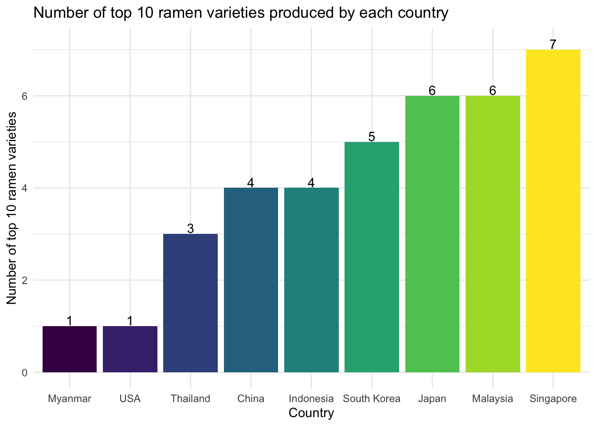
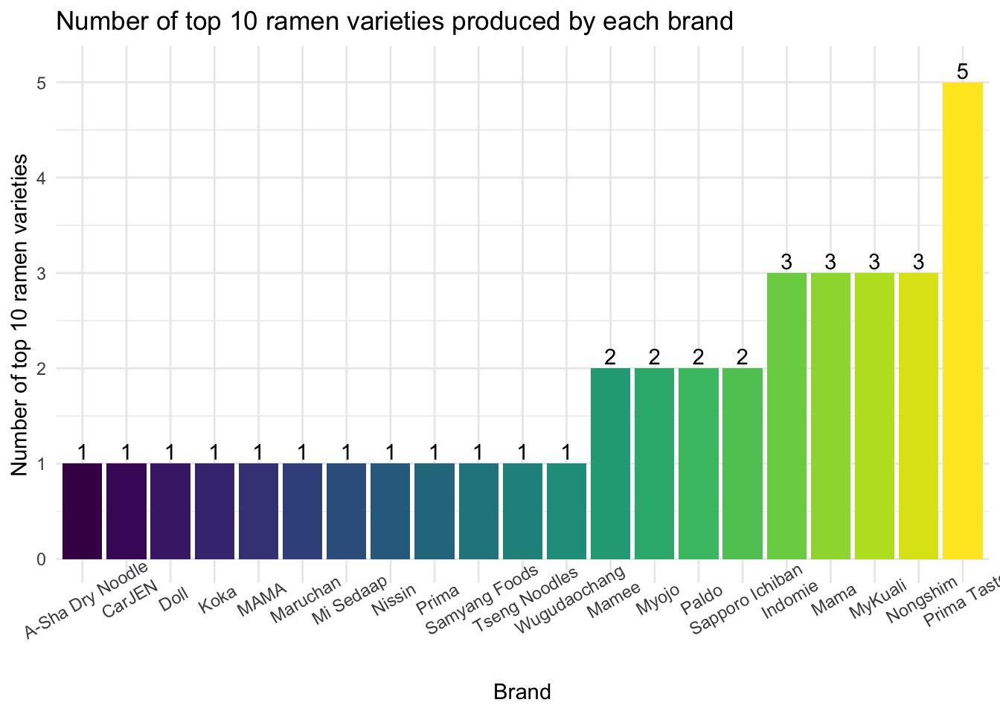
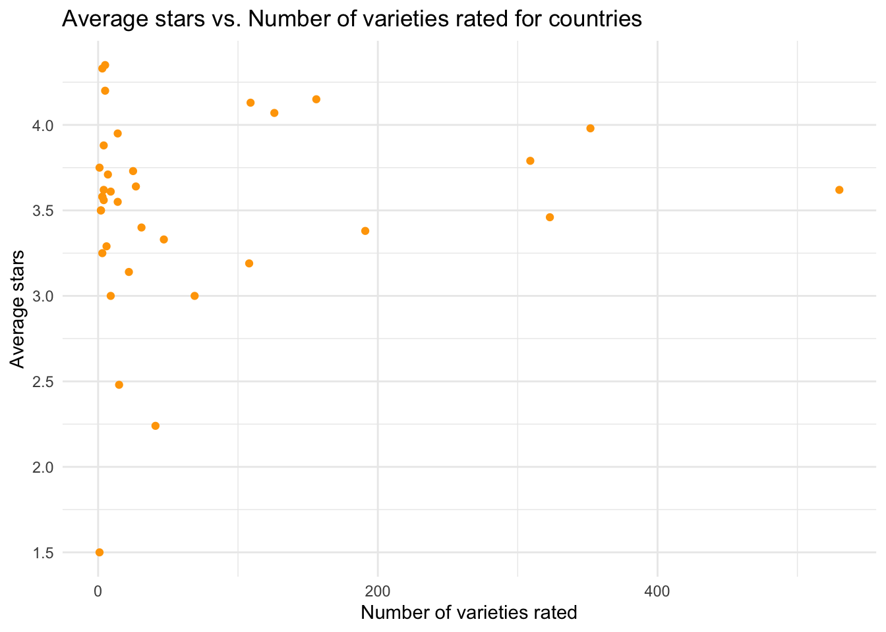

All members of the group are noodles lovers and want to look for the best instant noodles to purchase as well as the worst instant noodles to avoid purchasing in the future. We found an amazing dataset about ramen ratings in Kaggle and decided to use it as a reference to answer our questions.
Review #: The unique ID for reviews. More recently reviewed ramen varieties have higher numbers.Brand: The brand name of the ramen variety.Variety: The product name.Country: The country where the ramen variety is from.Style: The package tyle/style of the ramen variety.Stars indicates the ramen quality, as assessed by the rater, Hans, on a 5-point scale.Top Ten: The rank and rated year of each top 10 ramen.tidy_ramen =
read_csv("./ramen-ratings.csv") %>%
janitor::clean_names() %>%
separate(top_ten, into = c("year", "rank"), sep = " #", convert = TRUE) %>%
mutate(
country = str_replace(country, "Hong Kong", "China"),
country = str_replace(country, "Taiwan", "China"),
style = factor(style),
country = factor(country),
brand = factor(brand),
stars = as.numeric(stars)
)We conducted data cleaning on the raw dataset, which included:
year and rank).country as “China” to keep consistency of level with other values.
We generated bar charts of the number of top 10 ramen varieties for each country/brand as below:
top_country_bar =
tidy_ramen %>%
drop_na(rank) %>%
count(country) %>%
mutate(country = fct_reorder(country, n)) %>%
ggplot(aes(x = country, y = n, fill = country)) +
geom_col() +
geom_text(
aes(label = n),
nudge_y = 0.125
) +
labs(
title = "Number of top 10 ramen varieties produced by each country",
y = "Number of top 10 ramen varieties",
x = "Country"
)
top_country_bar
top_brand_bar =
tidy_ramen %>%
drop_na(rank) %>%
count(brand) %>%
mutate(brand = fct_reorder(brand, n)) %>%
ggplot(aes(x = brand, y = n, fill = brand)) +
geom_col() +
geom_text(
aes(label = n),
nudge_y = 0.125
) +
labs(
title = "Number of top 10 ramen varieties produced by each brand",
y = "Number of top 10 ramen varieties",
x = "Brand"
) +
theme(axis.text.x = element_text(angle = 30))
top_brand_bar
Singapore was the country that had the most top 10 ramen varieties (7), while Prima Taste was the brand that had the most top 10 ramen varieties (5).
In the Rating by Country page, we performed data analysis on the ramen variety count by country to give us an idea about the top ramen produce countries and created average rating distribution graphs for the top four ramen produce countries. Then, we calculated the average ramen rating scores for each country in our dataset to find the top three and bottom three countries.
five_stars =
tidy_ramen %>%
select(brand, stars) %>%
group_by(brand) %>%
filter(stars == 5)
zero_stars =
tidy_ramen %>%
select(brand, stars) %>%
group_by(brand) %>%
filter(stars == 0)The total number of brands is 355. The number of brands with 5-star ramens is 106, and the number of brands with 0-star ramens is 21.
We first drew a bar chart to show the numbers of varieties for the 5 brands with most varieties rated.
most_various =
tidy_ramen %>%
group_by(brand) %>%
summarize(num_varieties = n()) %>%
top_n(5) %>%
mutate(brand = fct_reorder(brand, num_varieties))
most_various_plot =
most_various %>%
mutate(text_label = str_c("Brand: ", brand, "\nNumber of varieties: ", num_varieties)) %>%
plot_ly(
x = ~brand, y = ~num_varieties, color = ~brand, type = "bar",
text = ~text_label,
marker = list(line = list(color = 'white', width = 1.5))
) %>%
layout(title = "5 Ramen Brands with Most Rated Varieties",
xaxis = list(title = "Brand"),
yaxis = list(title = "Number of Varieties"))
most_various_plotFor these 5 brands, we created a box plot about their rating distributions.
distri_various =
tidy_ramen %>%
drop_na(stars) %>%
filter(brand %in% c("Paldo", "Mama", "Maruchan", "Nongshim", "Nissin")) %>%
mutate(brand = forcats::fct_relevel(brand, c("Paldo", "Mama", "Maruchan", "Nongshim", "Nissin"))) %>%
ggplot(aes(x = brand, y = stars, color = brand)) +
geom_boxplot() +
labs(
title = "Rating Distribution Plot of the 5 Brands with Most Rated Varieties",
x = "Brand",
y = "Rating Stars (0-5)"
)
distri_various
The median rating stars for Nissin, Nongshim, and Paldo are close to 4 stars. The medians for Mama and Maruchan are lower than 4 stars. More than 75% of products of these 5 brands were rated above or equal to 3 Stars.
We then created a bar chart showing the percentage of 5-star for each brand from the lowest on the left to the highest on the right.
five_stars_various =
tidy_ramen %>%
drop_na(stars) %>%
filter(brand %in% c("Paldo", "Mama", "Maruchan", "Nongshim", "Nissin"),
stars == 5) %>%
group_by(brand) %>%
summarize(num_five = n())
num_five_various =
full_join(
most_various, five_stars_various, by = c("brand")
) %>%
mutate(prct = num_five / num_varieties * 100)
prct_plot =
num_five_various %>%
mutate(brand = fct_reorder(brand, prct)) %>%
ggplot(aes(x = brand, y = prct, fill = brand)) +
geom_col() +
geom_text(
aes(label = round(prct, 2)),
nudge_y = 0.5
) +
labs(
title = "Percentage of 5 Stars Ramen among the 5 Brands with Most Rated Varieties",
x = "Brand",
y = "Percentage of 5 Stars (%)"
)
prct_plotAll of these 5 brands have at least one ramen variety that was rated as 5 stars. Paldo has the highest percentage of ramen varieties rated as 5 stars, while Maruchan has the lowest percentage of ramen varieties rated as 5 stars.